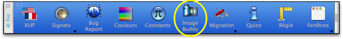
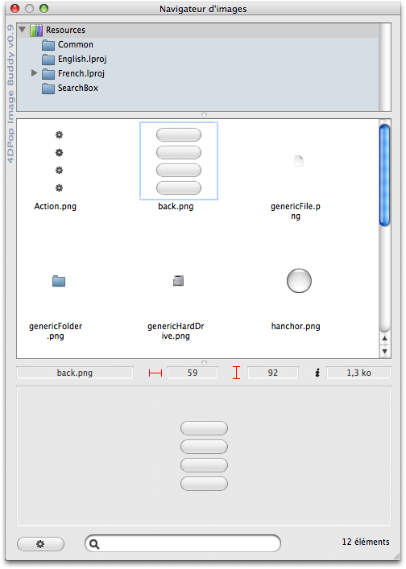
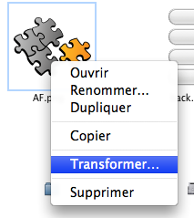
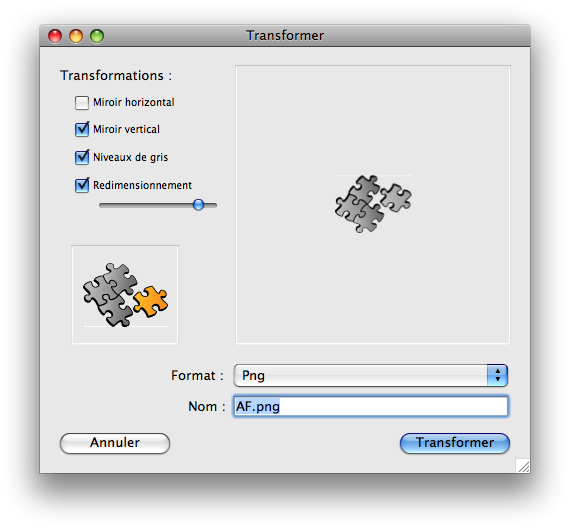
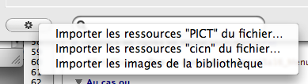

|
|
||||
4DPop Image Buddy est un outil destinés à la gestion des images situées dans le dossier "Resources" de la base en cours de développement ou de l'un de ses sous-dossier.
Installation du composant
| 1. | Créez un dossier "Components" à côté du fichier de structure de votre base (".4db") |
| 2. | Placer le dossier "4DPop Image Buddy.4dbase"* ou un alias de ce dernier dans le dossier "Components" |
| 3. | Ouvrez votre base. |
| 4. | Si le composant 4DPop est installé un nouveau bouton "Image Buddy" se trouve dans la barre d'outils. Il permet d'ouvrir l'éditeur.
 Si le composant 4DPop n'est pas installé il faut, pour lancer l'éditeur, sélectionner dans le menu "Exécuter" la ligne "Méthodes..." puis dans la liste des méthodes proposées sélectionner "Pictures_Browser" et enfin cliquer sur le bouton "Exécuter" (la méthode "Pictures_Browser" peut également être appelée depuis toute méthode de la base hôte) |
*Sur Macintosh, le composant est un package dont l'extension ".4dbase" n'est pas obligatoirement visible en fonction des réglages de vos préférences d'affichage.
Le composant affiche un "Navigateur d'images"

Fenêtre du navigateur
L'éditeur comporte 4 parties de haut en bas :
1. Liste des dossiers
Cette liste reflète la hiérarchie du dossier "Resources" de la base en cours de développement.
Elle est construite à l'ouverture de l'éditeur et peut être modifiée via le menu contextuel ou par glissé-déposé.
un menu contextuel est disponible sur les éléments de cette liste.
|
Note : Certains items ne sont pas disponibles pour le dossier racine ou en client-serveur.
Si vous déposez un fichier image depuis le bureau ou depuis la liste des images (cf. infra) sur un dossier, une copie de cette image est ajoutée dans le dossier cible.
Si vous déposez une image statique depuis un formulaire ou la bibliothèque d'image de 4D sur un dossier, après saisie de son nom, une image est ajoutée dans le dossier cible (au format 4pct).
2. Liste des images
La liste des images affiche les images du dossier sélectionné sous forme de vignettes.
La sélection d'une ou de plusieurs images se fait par clic éventuellement associé à la touche majuscule pour étendre la sélection de façon continue ou à la touche commande pour une sélection discontinue.
La navigation se fait avec les touches flèche haut, bas, gauche et droite.
Un menu contextuel est disponible en fonction de la sélection.
|  |
|
Vous pouvez faire glisser une image vers un formulaire en cours d'édition : Un objet image de la bibliothèque est créé et automatiquement lié au fichier du dossier "Resources" (cf "Référencement automatique des image" dans le manuel "4D v11 Mise à jour").
Vous pouvez également, depuis cette liste, déposer une image sur un éditeur, dans le dock ou la barre des tâches par exemple, pour l'ouvrir avec ce logiciel.
3. Zone de prévisualisation et d'information
Cette zone permet de visualisation affiche également le nom, la largeur, la hauteur et le poids de l'image sélectionnée.
Vous pouvez également faire glisser cette image vers l'éditeur de formulaire, un autre logiciel ou le bureau.
4. Pied
Cette zone comprend un bouton "Action" lié à un menu d'utilitaires (cf. infra), une zone de saisie permettant de filtrer les images affichée par leur nom et une zone d'informations indiquant le nombre d'images trouvée dans le dossier sélectionné.
Transformer une image
|  | Le dialogue de Transformation permet :
|
Utilitaires
 |
Le menu associé au bouton action regroupe les utilitaires de migration décrit plus haut. |
Note : |
|
Client-Serveur
En mode distant, Certaines opérations sur les dossiers sont pour le moment inactivées (supprimer, renommer et dupliquer) par contre lors de l'ajout ou de la suppression ou de la modification d'une image, celle-ci est transférée sur le serveur qui met à jour son dossier "Resources" puis notifie les clients de la modification.
Quoi de neuf
version 1.2 :
- Fonctionnement en Client/Serveur.
- Mémorisation de la position de la fenêtre et de celle des séparateurs
- Ajout du déposé d'image sur le bouton de la palette 4DPop
- Correction de bugs
Code source fourni
Ce composant est fourni en version compilée, mais vous trouverez le code source dans le dossier "SOURCES" à l'intérieur du dossier du composant.
Forum
Un forum pour 4DPop est disponible à cette adresse : Forum 4DPop